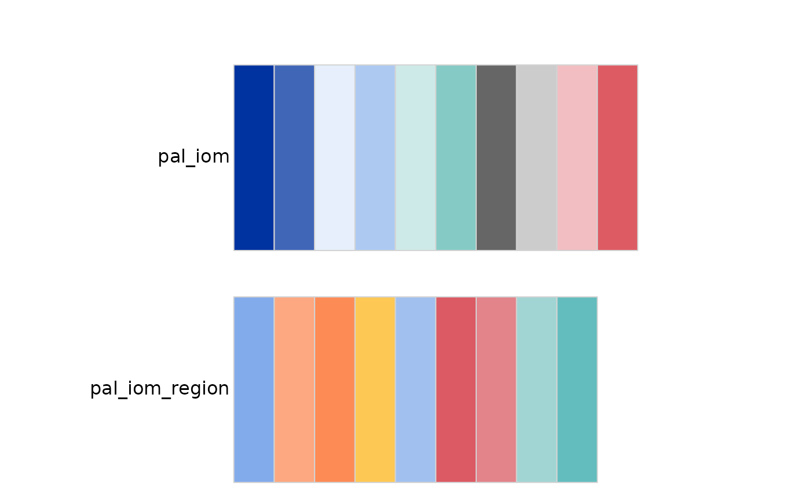
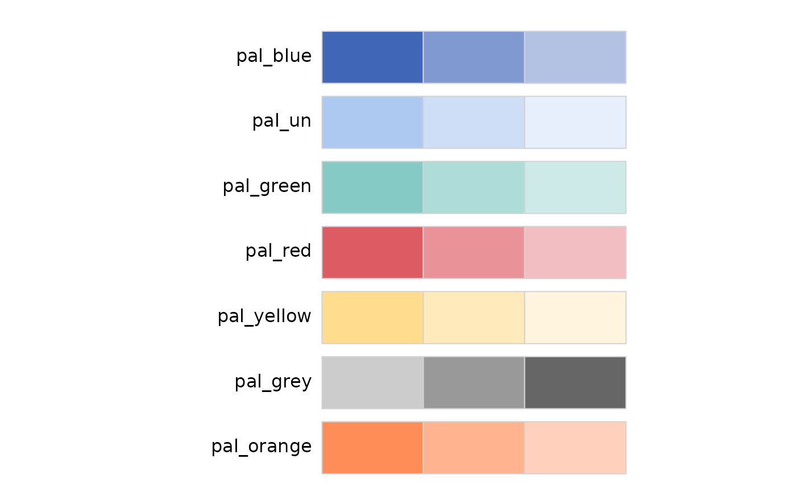

Creates a color palette from IOM branding.
Arguments
- n
Integer. Number of different colors in the palette. Minimum depends on the palette (2), maximum depends on the palette (5, 7, or 10). If
NULL, the maximum number of colors for the palette is used.- name
Character. A palette name from the IOM branding.
we have:
2 qualitative palettes -
pal_iomandpal_iom_region5 sequential palettes -
pal_blue,pal_navy,pal_green,pal_red,pal_yellow,pal_grey2 diverging palette -
pal_blue_red&pal_navy_rev
- ...
Additional arguments passed to grDevices::colorRampPalette.
Details
This function generates a color palette based on the specified
IOM branding palette name.
If the number of colors n is not within the valid range for
the palette, warnings are issued and the closest valid number of
colors is used.
Examples
# Display all IOM color palette with filters
# Qualitative Palette:
# When to Use: Use a qualitative palette when you have categorical data,
# meaning data that represents different groups or categories without any
# inherent order.
# Example: Different colors for different countries
iom_pal_display_all(type = "qualitative")

iom_pal(n =3, "pal_iom")
#> [1] "#18375F" "#0033A0" "#8F9DF7"
# Sequential Palette:
# When to Use: Use a sequential palette when you have numerical data that
# progresses from low to high. This type of palette shows a gradient of
# colors, usually from light to dark.
#Example: Temperature changes over a year, population density, or income levels.
iom_pal_display_all(n = 3, type = "sequential")

iom_pal_display_all(n = 5, type = "sequential")
iom_pal(3, "pal_blue")
#> [1] "#8F9DF7" "#5C6CC8" "#0033A0"
iom_pal(5, "pal_navy")
#> [1] "#E0E9FE" "#B8C9EE" "#8395B9" "#506489" "#18375F"
iom_pal(12, "pal_red")
#> [1] "#FFE1E1" "#FFCDCE" "#FFBABB" "#FFA5A7" "#FF898D" "#FF6D73" "#F6555C"
#> [8] "#E64048" "#D62B34" "#BF252E" "#A6242B" "#8E2429"
# Diverging Palette:
# When to Use: Use a diverging palette when you have numerical data with a
# meaningful midpoint, such as zero, and you want to show variation on both
# sides of this midpoint.
# Example: Anomalies (deviations from a norm),
# survey responses ranging from negative to positive.
# for diverging palette, you can not get more than 9 different colors
iom_pal_display_all(type = "diverging")